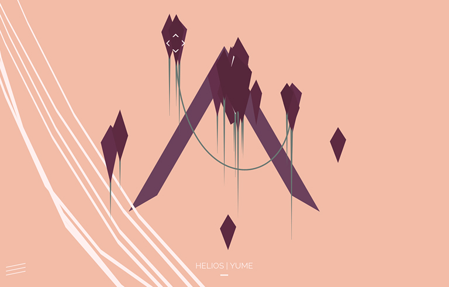

01
09
Yume
audio / web
Interactive music, visuals and exploration
Launch
YUME is an interactive experience created to promote the album 'Yume' by ambient artist Helios. Floating rock shards become tactile music controllers, which can also manipulate the environment. Different scenes can be freely explored, each one with a different feel/sound.

02
09
ARP
generative
Twitter & SoundCloud bot, generating audio, images & words
Launch
ARP is a fictional radio telescope observatory. It’s a Twitter & SoundCloud bot which procedurally generates audio, data visualisations, and the tweets ( and occasionally long-exposure photography ) of an astronomer/research scientist who works at ARP, who is obsessive over the audio messages, and who runs the observatory’s Twitter account.